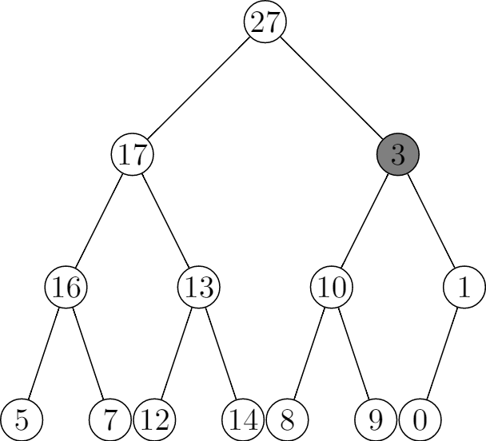
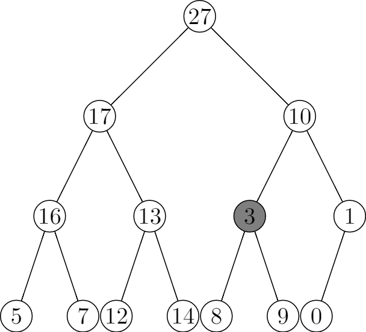
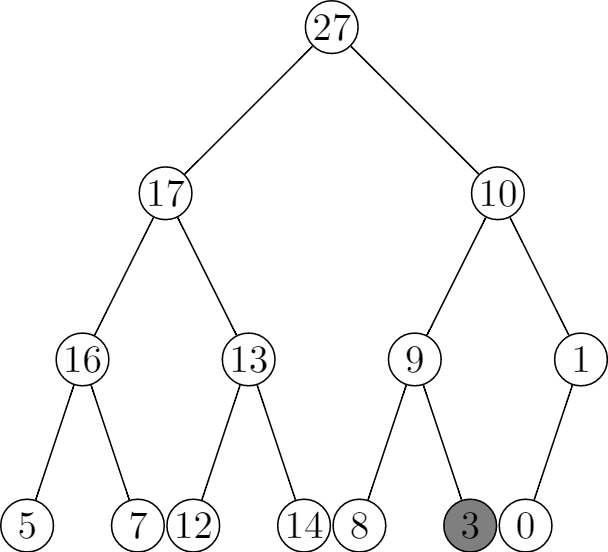

6.2 Maintaining the heap property
6.2-1
\documentclass{standalone}
\usepackage{tikz}
\begin{document}
\begin{tikzpicture}[level/.style={sibling distance=30mm/#1},
treenode/.style={align=center, inner sep=0pt, text width=1.2em, text centered},
current/.style={fill=gray}]
\node [circle,draw,treenode] {27}
child {
node [circle,draw,treenode] {17}
child {
node [circle,draw,treenode] {16}
child {
node [circle,draw,treenode] {5}
}
child {
node [circle,draw,treenode] {7}
}}
child {
node [circle,draw,treenode] {13}
child {
node [circle,draw,treenode] {12}
}
child {
node [circle,draw,treenode] {14}
}
}
}
child {
node [circle,draw,treenode] {10}
child {
node [circle,draw,treenode] {9}
child {
node [circle,draw,treenode] {8}
}
child {
node [circle,draw,treenode,current] {3}
}
}
child {
node [circle,draw,treenode] {1}
child {
node [circle,draw,treenode] {0}
}
child [missing]
}
};
\end{tikzpicture}
\end{document}



6.2-2
MIN-HEAPIFY(A, i)
l = LEFT(i)
r = RIGHT(i)
if l <= A.heap-size and A[l] < A[i]
min = l
else
min = i
if r <= A.heap-size and A[r] < A[min]
min = r
if min != i
exchange A[i] with A[min]
MIN-HEAPIFY(A, min)
The running time is still $O(\lg{n})$.
6.2-3
The procedure terminates and the running time is O(1).
6.2-4
In exercise 6.1-7 we know the leaves are the nodes indexed by $\lfloor \frac{n}{2} \rfloor + 1, \ldots$, thus if i > A.heap-size / 2, then the node at index i is a leaf, so both l <= A.heap-size and r <= A.heap-size fail, the procedure terminates.
6.2-5
MAX-HEAPIFY(A, i)
largest = -1
root = i
while largest != root
l = LEFT(root)
r = RIGHT(root)
if l <= A.heap-size and A[l] > A[root]
largest = l
else
largest = root
if r <= A.heap-size and A[r] > A[largest]
largest = r
if largest != root:
exchange A[root] with A[largest]
root = largest
largest = -1
6.2-6
The worst-case happens when it checks every node from the root down to a leaf. And the height h is $\lfloor \lg{n} \rfloor \geq \lg{n}$, so the worst-case running time is $\Omega(\lg{n})$.